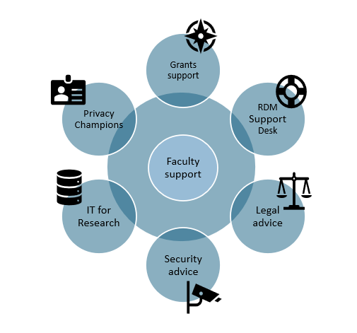

What research data services and support are available for VU researchers?
Vrije Universiteit Amsterdam is providing a range of data management solutions and support services, offered by various departments and support teams. An overview of these services is shown in the Research Data Management, Tools and services video below.
Research Data Management is supported by various departments at VU Amsterdam, all providing support on the topics shown in the overview above. Apart from that, all faculties have teams providing research data support for their own faculty members. In most cases this is the first line of support for researchers to start their inquiries.

VU Research Data support services and teams
Faculty support
A faculty or institute research data management professional is a primary point of contact for any questions related to research data management (RDM). This can be a Data Steward, Data Manager or RDM coordinator. The VU website provides a list of all faculty support professionals.
RDM Support Desk and library support professionals
The RDM Support Desk provides practical assistance, help and advice with any RDM- and RDM tools related questions, for example about: writing a data management plan, making your research FAIR, grants and RDM costs, training and workshops, data storage, data and software archiving and publishing, GDPR and the use of RDM tools like Yoda and Research Drive. In case your faculty or institute does not have a designated support officer, the RDM Support Desk is the go-to place.
You can contact the RDM Support Desk via the VU Research Data Support service portal (only for VU employees) or via rdm@vu.nl. You can also find a list of professionals of the RDM Support Desk on the VU website.
Privacy Champions
Privacy Champions are colleagues who are the first point of contact for all questions regarding privacy and data protection related topics. They can help you with the most common privacy questions, for example: can we process this personal data without consent of the data subjects? Is this software application suitable for the processing of sensitive personal data? An overview of all faculty and department Privacy Champions is provided on the 🔒 Privacy Champion who-is-who page.
IT for Research (ITvO)
The expertise center research IT is a primary point of contact for questions related to compute services, high performance computing and local storage of large data volumes. ITvO will help you to find a suitable technical solution or support for your research group or project. You can find more information about the VU Compute Hub, the ADA high performance compute cluster, the VU local storage solution SciStor and server capacity on SciCloud in other Handbook topics. You can read more about the services ITvO provides on the ITvO topic page.
VU Grants Office
The Grants Office provides advice on various types of national and international, individual and consortium grants: From complex multidisciplinary applications with multiple partners such as Horizon Europe, NWO Gravitation and NWA, to renowned individual grants such as NWO Veni, Vidi, Vici and ERC Starting, Consolidator and Advanced grants. The Grants Office gives advice throughout the grant application process and during the term of the subsidy. You can read more about the VU Grants Office on the 🔒 VU Amsterdam Grants Office page.
Legal advice
If you need advice on legal and administrative matters, you can contact the team of Institutional and Legal Affairs. This is the VU legal enquiry centre. They can provide advice on a wide range of issues, for example: How do you arrange for personal data to be processed safely and carefully? How to set up contracts in collaborative research projects? What happens with the research results? Can each party use the other parties’ results? You can find out more about legal support at the Institutional and Legal Affairs pages.
Information Security Officers (ISOs)
Before the start of a new research project, it is necessary to assess the risks associated with the data that will be collected and/or used in the project. Classifying research data enables researchers to protect the data in an appropriate manner. What is relevant, is that the security level matches the identified risks. This enables the researcher to determine where the data may or may not be processed and under which conditions.
The IT Information and Security Officers (ISO) can help you with these security matters related to data protection and the use of the right software solutions. The RDM Support Desk or a faculty Privacy Champion is the first point of contact on these matters. If necessary, they will contact the ISO Office for further advice.
Other helping aids in data-classification and classification policies are the Data Classification Tool and the Policy Classification of Research Data.
Research process overview
Use this detailed research process overview to get more information about steps that may occur during the research process and the support offered at VU Amsterdam for these steps. This overview is very detailed and starts at the earliest stages of identifying research and funding opportunities, and ends at the point of preparing communication about your research. We recommend to read the README and Instructions tabs first before you dive in. For questions, you can also reach the RDM Support Desk
General Faculty research support and management guidelines are available in the section Policies & Regulations.
Decision support tools
There are multiple data storage options that can be used, each with its own functionality and purpose. The Data Storage Finder is a tool that will give you a number of storage options suitable for your research. For more individual guidance, please get in touch with the RDM Support Desk) for advice, particularly when you are working with commercial, personal or otherwise sensitive data, or when you have a complex IT setup.
The Data Classification Tool helps in assessing the risks associated with research data and provides feedback on what measures need to be undertaken to protect the data.
Communities
Researchers and research support staff who are interested in research data management and want to find out more about it are welcome to join the RDM Community of VU Amsterdam. The objective of the network is to exchange knowledge and inspire each other. You can find out more about the community and its activities on the community pages.
If you want to meet other researchers, improve your programming skills, or ask questions related to programming, you can join the Monthly Programming cafe, Bytes & Bites. At Bytes & Bites anyone is welcome, whether you are a beginner or advanced programmer, whether you write in R or in C++. Find out more about this community on the Bytes and Bites Github pages.
Training
On the Training page you will find a complete overview of trainings and workshops provided by VU support staff. The page also contains information about open science games that you can set up yourself.
Other information resources
There are numerous useful information resources on research data management available. Some of them are general and discipline-agnostic, others are strongly focussing on specific research disciplines or research data types. Below we have listed a number of these resources which can help you to learn more on research data management and related topics.
- The Turing way is an open-source, community-driven handbook aimed at promoting best practices in reproducible, ethical and collaborative data science. It is a valuable resource for information on data management, data security and research projects in general.
- The CESSDA Data Management Expert Guide is designed by European experts to help social science researchers make their research data Findable, Accessible, Interoperable and Reusable (FAIR). The guide is written for social science researchers who are in an early stage of practising research data management. The guide describes a lot of practical approaches to research data management which are useful for other domains as well.
- GO FAIR is a stakeholder-driven and self-governed initiative that aims to implement the FAIR principles. It offers numerous resources about how to make research data FAIR and how to organise communities.
- The course Essentials 4 Data Support, developed by Research Data Netherlands, is an introductory program designed for professionals who want to assist researchers in storing, managing, archiving, and sharing their research data. Although the course is designed for data support professionals, it provides many online useful resources on various data management topics for researchers as well.